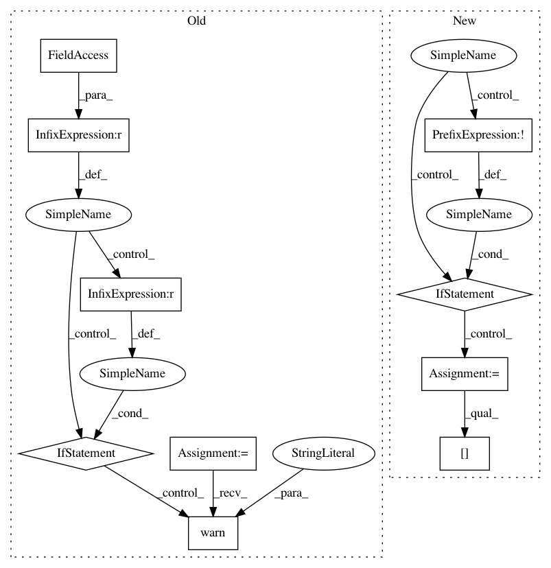

f9dd2e3636db61ee1b4d32ee4f494fd9e71adc12,cleverhans/attacks.py,FastGradientMethod,generate_np,#FastGradientMethod#Any#Any#,159
Before Change
Generate adversarial samples and return them in a Numpy array.
if self.default_graph is None:
error_string = "The attack symbolic graph was not generated."
raise Exception(error_string)
if self.nb_calls_generate > 1:
warnings.warn("Attack was generated symbolically multiple "
"times, using graph defined by first call.")
// Verify label placeholder was defined previously if using true labels
if params["Y"] is not None:
error = "True labels given but label placeholder missing in _init_"
assert self.y is not None, error
After Change
import tensorflow as tf
// Generate this attack"s graph if it hasn"t been done previously
if not hasattr(self, "_x"):
input_shape = list(X.shape)
input_shape[0] = None
self._x = tf.placeholder(tf.float32, shape=input_shape)
self._x_adv = self.generate(self._x)
// Run symbolic graph without or with true labels
if params["Y"] is None:
feed_dict = {self._x: X}
else:
feed_dict = {self._x: X, self.y: params["Y"]}
In pattern: SUPERPATTERN
Frequency: 3
Non-data size: 10
Instances
Project Name: tensorflow/cleverhans
Commit Name: f9dd2e3636db61ee1b4d32ee4f494fd9e71adc12
Time: 2017-03-29
Author: ngp5056@cse.psu.edu
File Name: cleverhans/attacks.py
Class Name: FastGradientMethod
Method Name: generate_np
Project Name: tensorflow/cleverhans
Commit Name: f9dd2e3636db61ee1b4d32ee4f494fd9e71adc12
Time: 2017-03-29
Author: ngp5056@cse.psu.edu
File Name: cleverhans/attacks.py
Class Name: Attack
Method Name: generate_np
Project Name: tensorflow/tensorboard
Commit Name: a02e5721ab5babc58e7d41cda5c0aaafe30320d1
Time: 2020-01-22
Author: wchargin@gmail.com
File Name: tensorboard/backend/event_processing/data_provider.py
Class Name: MultiplexerDataProvider
Method Name: read_blob